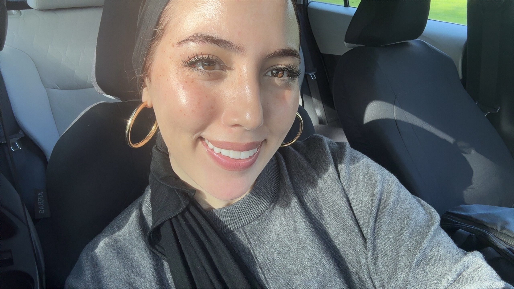
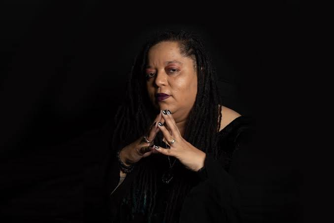
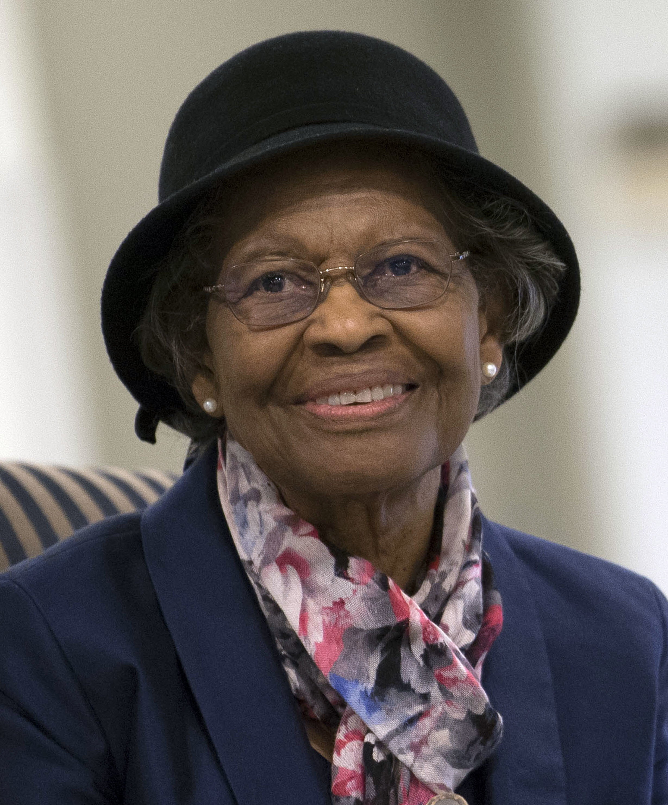

Mind The Algorithm
Implicit bias is stronger than you think!
Implicit Bias
Understanding Implicit Bias
We make thousands of judgments every day, but we aren't always aware of what influences them. Implicit biases are associations and attitudes that can operate without our conscious awareness. These biases can influence how we perceive and interact with others, even when they conflict with our consciously held beliefs. This guide introduces implicit bias, the Implicit Association Test (IAT), and intersectionality—and provides resources for learning more.
Implicit Bias -> The IAT -> Intersectionality
What It Means
Implicit bias refers to attitudes or associations that can influence our perceptions without us being consciously aware of them. These associations can develop through our experiences, environments, media, culture, and repeated exposure to stereotypes.
Imagine you're assigned a group project in a computer science course. Before anyone has begun working, you automatically assume that the male student in your group is probably the strongest programmer. You may consciously believe that gender has nothing to do with programming ability, but the association can still affect whose ideas you trust or who you ask to take the lead.
Having an implicit association and consciously endorsing a stereotype aren't necessarily the same thing. Part of studying implicit bias is examining the gap that can exist between the beliefs we consciously hold and associations we have learned.
Our Perspective: One important part of understanding implicit bias is moving beyond the idea that bias only exists when someone deliberately discriminates against another person. Someone can genuinely value equality while still being influenced by associations they have absorbed from their environment. Recognizing this should not be about labeling people as "good" or "bad." Instead, it gives us another way to examine how our decisions are made and where inequality can emerge even without an explicit intention to discriminate.
The Implicit Association Test (IAT)
The Implicit Association Test (IAT) is designed to measure the strength of associations between concepts. Rather than simply asking someone what they believe, the test measures how quickly they categorize different concepts using the same response keys.
Your result is not a diagnosis. The IAT is a tool for examining associations, not a simple test that determines whether someone is "biased" or "unbiased." Project Implicit itself notes that scientific understanding of implicit measures continues to develop and that researchers can disagree about their interpretation.
Our Perspective: We think the IAT is most valuable as a starting point for reflection rather than a final judgment about someone's character. Receiving an unexpected result can be uncomfortable, especially if the association conflicts with your conscious values. However, that discomfort can lead to more interesting questions: Where might this association have come from? What messages have I encountered throughout my life? Could associations like this influence my behavior? At the same time, reducing implicit bias to a single test score risks oversimplifying a complicated issue. Rather than asking, "Am I biased?" we think a more useful question is, "What biases might influence me, and what can I do to prevent them from unfairly influencing my decisions?"
What is Intersectionality?
Legal scholar Kimberlé Crenshaw coined the term intersectionality to explain how different forms of inequality can overlap. The concept originally helped explain how Black women could experience discrimination in ways that could not be understood by looking at racism and sexism completely separately.
In simpler terms, people aren't defined by just one part of their identity. Race, gender, sexuality, socioeconomic status, disability, and other identities can interact with one another and influence how someone experiences the world.
Suppose researchers discover that women are underrepresented in the technology industry. Looking only at gender might reveal an important inequality—but it may not tell the entire story. Are women of different racial backgrounds represented equally? What about women with disabilities? Do socioeconomic barriers affect who has access to computer science education in the first place? Intersectionality asks us to consider how these factors interact rather than assuming everyone within a broad category such as "women" has the same experience.
Our Perspective: Intersectionality complicates conversations about implicit bias in an important way. If we study biases using only one identity category at a time, we may overlook people whose experiences exist at the intersection of multiple categories. Addressing gender bias, for example, doesn't necessarily mean that every woman will benefit equally. This is particularly important when studying technology. If designers assume there is one universal "user," technologies may work better for the people represented in the design process while overlooking others. Intersectionality encourages us to ask not only "Who is affected?" but also "Whose experiences might our categories be hiding?"
Why Does Implicit Bias Matter?
Education: Implicit assumptions can influence who we perceive as intelligent, capable, disruptive, or suited for particular academic fields.
Workplace:Bias can potentially influence decisions about hiring, leadership, evaluations, and who is perceived as a "good fit."
Technology:Technology is created by people and institutions. Decisions about datasets, categories, users, features, and design priorities can reflect assumptions about whose experiences are considered "normal."
Everyday LifeBias can influence whom we trust, approach, listen to, avoid, or make assumptions about—even when we aren't consciously trying to treat people differently.
Our Perspective: Implicit bias matters because individual intentions aren't the only thing that shape outcomes. A person may genuinely intend to treat everyone fairly while relying on assumptions that influence their decisions. This is why addressing bias requires more than simply deciding "not to be biased." We also have to examine the environments, practices, technologies, and institutions that shape our decisions.
What Can I Do About It?
Becoming aware of implicit bias is only a first step. We can also change the processes through which decisions are made.
- Slow down important decisions. Ask yourself what information you're actually using to make a judgment.
- Question your assumptions. What made you expect a particular person to be more or less capable?
- Seek perspectives beyond your own. Exposure to different experiences can challenge assumptions we take for granted.
- Change systems, not just attitudes. Structured hiring criteria, accessibility practices, diverse design teams, and clearly defined evaluation standards can reduce opportunities for subjective assumptions to influence decisions.
Explore More!
New to implicit bias?
American Psychological Association - Implicit BiasWant to experience an implicit bias test?
Project Implicit - Take the IATConfused about your IAT result?
Project Implicit - IAT Frequently Asked QuestionsWant to understand intersectionality?
Kimberle Crenshaw on Intersectionality - More than Two Decades LaterAbout Us
Adeline Chvala
I'm majoring in Information Science, with certificates in Computer Science and Video Game Design. I also compete on the Women's Rowing Team. Outside of school, I enjoy painting and baking. I am taking this course because I am interested in understanding the disparities within the compting industry and why they happen. My favorite area of technology is video game development because it combines technology with creativity, design, and storytelling.

Sara Chennah
I'm a senior at UW–Madison studying Information Science with a minor in Data Science, and my focus is cybersecurity. I was born in Casablanca, Morocco, and grew up between Casablanca and the United States. Outside of school, I love surfing, especially when I'm in Morocco, painting, playing instruments like the piano, and reading psychology and philosophy books. My favorite area of technology is quantum computing because I love how it combines computer science, mathematics, and physics to explore what computers could be capable of in the future.

Mark Dorado-Zapata
I am a Senior majoring in Information Science with a Certificate in Computer Science. I am also a leader for BadgerCru, a christian organization on campus. I love anything to do with soccer, going to the gym, and anything to do with God. My favorite area of technology is the end user experience, how humans interact with it to enable them to impact society.
Our Tech Heroes!

Tanya DePass
Adeline's Tech hero
Tanya is a cypheroftyr, game journalist, streamer, and activist. She is best known for founding the #INeedDiverseGames movemen of 2014. This later evolved to the Chicago-based non-profic I Need DIverse Games in 2016. This organization helps marginalized developers attend and partner with key industry events. The movement began with the hope to bring more diverse characters into the video game world, and support underrepresented people within the industry. This is very relevant to me because I hope to go into the video game industry after I graduate. Many main video game characters are strong white men, and I think it is critical to bring more diversity into the world of game design as it allows for more players to see themselves in games, and to have a wider representation in entertainment.

NAME
Sara's Tech hero
Gladys West is a mathematician whose work helped create the GPS technology we use today. She used satellite data to create detailed models of the Earth, which helped make GPS more accurate. I chose her because I think it is really interesting that her work is something we use every day, but not many people know about her. As someone interested in technology, I think her story shows how important it is to recognize people from different backgrounds who have contributed to technology.

Ron Jetty
Mark's Tech hero
ITA Madison is a precollege program that I was a part of throughout highschool. ITA stands for "Information Technology Academy." Ron Jetty was the head of the program throughout my time there. He made me feel welcomed since the very first day and helped introduce me to a variety of aspects of technology during the program. These included programming, photography, photo and video editing, etc. I see Ron as a "tech hero" for me as he played a crucial role in me choosing to pursue a career that revoles around technology. He continues to impact the Madison community through his work and was named in "Wisconsin’s 24 Most Influential Native American Leaders" by Madison 365.